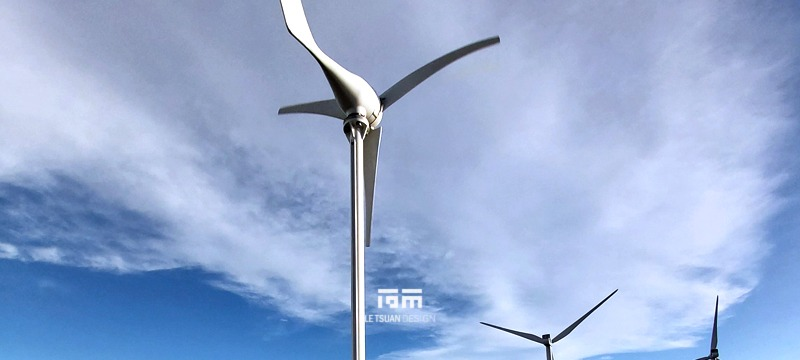
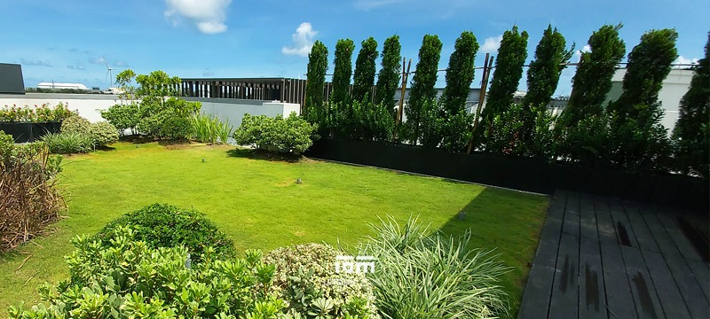
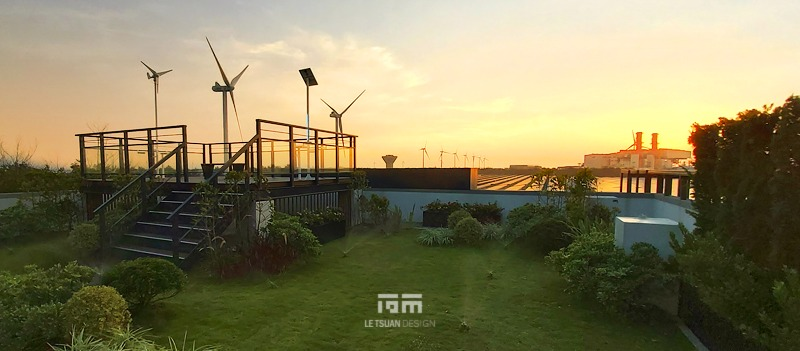
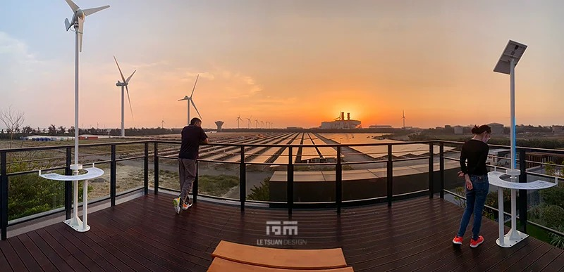
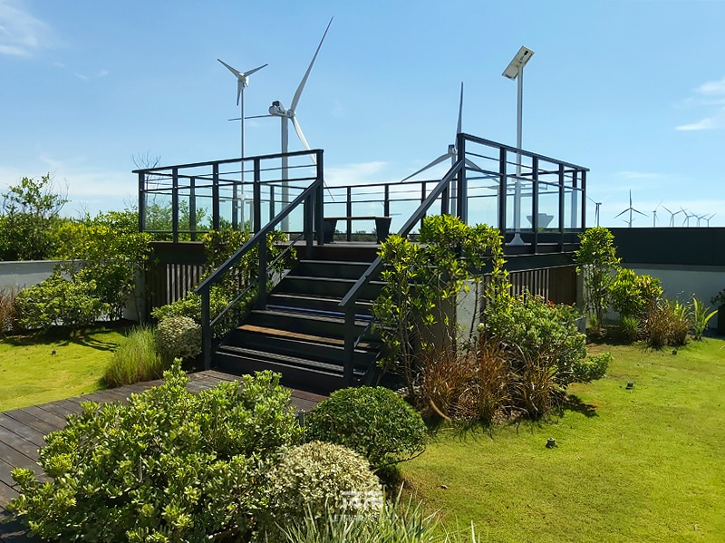
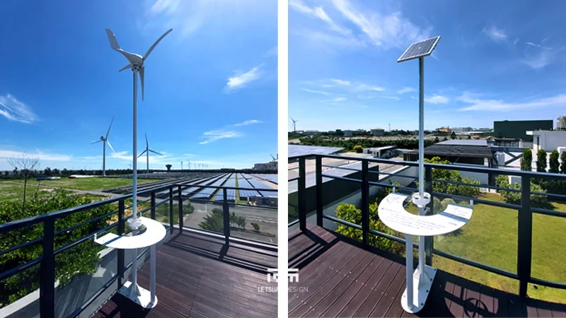
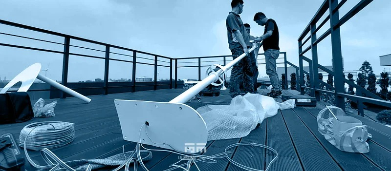

綠能教育觀景平台 彰化濱海工業區
在會啃掉金屬的空氣裡，蓋一座站得住腳的平台
綠能教育觀景平台｜彰化濱海工業區，鹽霧、化學氣體與紫外線的三重考驗
這座屋頂觀景平台，位於彰化濱海工業區，可以俯瞰壯闊的綠能太陽能發電場。透過互動式風力與太陽能教育設備，訪客得以從單純的「觀看」進階為真正的「理解」–動手操作的模擬裝置，讓人直接體驗風與光如何轉化為電力，完全運作中的太陽能場則盡收眼底。再生能源不再是抽象概念，而是一幅能親眼看見、親手觸摸的真實場景。
基地緊鄰海岸線，又靠近化工廠區，環境條件比一般案場嚴苛得多–鹽害、腐蝕性化學氣體與強烈紫外線曝曬，三種力量同時作用在同一批材料上，是我們從設計階段就必須正面迎戰的課題。景觀植栽、土壤配方跟教育設備材質，全部得重新評估與測試，才敢用在這裡。
先顧防水，才談種什麼
屋頂造園，順序不能顛倒。我們先從天台防水做起，確保頂板不會因為長期蓄水或植栽澆灌而滲漏；接著規劃排水系統，讓多餘的水分能順利排出，不在屋頂上積存；再建置自動澆灌系統，因應海岸強風與高溫日曬下植物的用水需求，才輪到植物本身的選用與綠植空間的建構。
鹽霧會咬穿一般植物的根系，我們選用耐鹽、抗風、能適應貧瘠土壤的原生海岸物種，把損害降到最低。土壤也撐不住鹽鹼化的長期累積，改良基質特別加強排水性與耐鹽鹼結構，讓植物能長期存活而不是撐過一季。互動教學裝置的外殼與結構元件，採用304不鏽鋼搭配氟碳烤漆處理。但材料規格本身並不足以保證耐候表現，真正決定成敗的是施工的執行細節–工具鎖固過程中留下的任何刮痕、破損，都必須完整重新包覆，不能留下一絲破口，因為鹽害腐蝕最容易從這些微小的表面損傷處開始滲透。
在這樣的環境條件下，材料規格只是起點，每一處鎖固、包覆的施工細節才是這座觀景平台真正撐得住海岸氣候的關鍵。
有專案想討論？
聯絡我們





